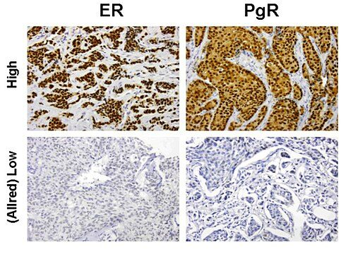

Información divulgativa. No sustituye la valoración de tu equipo médico ni sirve para decidir un tratamiento.


En resumen
| Frecuencia | Alrededor del 1 % de todos los cánceres de mama; unos 300-400 casos al año en España |
| Edad | Sobre todo entre los 60 y los 70 años |
| Señal típica | Un bulto indoloro detrás del pezón |
| Herencia | Entre el 10 y el 15 % tienen una variante hereditaria, sobre todo en BRCA2 |
| Biología | Más del 90 % con receptores hormonales positivos |
Qué es
Los hombres también tienen una pequeña cantidad de tejido mamario detrás del pezón, y en él puede aparecer un cáncer. Casi siempre es un carcinoma infiltrante de tipo no especial con receptores de estrógenos positivos. Por ser poco conocido, muchos hombres consultan tarde, y la proporción de casos con ganglios afectados al diagnóstico es mayor que en las mujeres.
Factores de riesgo
- Variantes en BRCA2 (el riesgo a lo largo de la vida puede llegar al 6-8 %), y en menor medida BRCA1, PALB2 y CHEK2.
- Antecedentes familiares de cáncer de mama u ovario.
- Exceso de estrógenos: síndrome de Klinefelter, obesidad, enfermedad hepática crónica, algunos tratamientos hormonales.
- Radioterapia previa en el tórax.
- Edad.
La ginecomastia (aumento benigno de la mama en el hombre) es muy frecuente y no es cáncer, aunque a veces cuesta distinguirlos sin pruebas.
Síntomas
- Un bulto duro e indoloro, normalmente detrás del pezón o la areola.
- Pezón retraído, con secreción (a veces con sangre) o con una herida.
- Ganglios aumentados en la axila.
Diagnóstico
Exploración, mamografía y ecografía, y biopsia con aguja gruesa con el estudio de receptores y HER2. A todos los hombres con cáncer de mama se les recomienda estudio genético, porque el resultado ayuda al tratamiento y a sus familiares.
Tratamiento
- Cirugía: suele ser una mastectomía, porque el tumor está cerca del pezón y hay poco tejido, con biopsia del ganglio centinela.
- Radioterapia según el tamaño y los ganglios.
- Hormonoterapia: el tamoxifeno durante 5 a 10 años es el tratamiento de elección. Los inhibidores de la aromatasa solos son menos eficaces en hombres y, si se usan, se combinan con fármacos que suprimen la testosterona.
- Quimioterapia y anti-HER2 según el riesgo y el subtipo, como en las mujeres.
- En la enfermedad metastásica, las mismas opciones que en las mujeres, incluidos los inhibidores de CDK4/6.
Los efectos del tamoxifeno en el hombre (sofocos, disminución del deseo sexual, aumento de peso) llevan a abandonarlo con más frecuencia: comentarlos con el equipo ayuda a buscar soluciones.
Pronóstico
Con el mismo estadio, el pronóstico es parecido al de las mujeres. Las diferencias en la supervivencia global se deben sobre todo al diagnóstico más tardío y a la mayor edad.
Después del tratamiento
Mamografía anual de la mama que queda, revisión clínica, y en portadores de BRCA2, vigilancia de próstata, páncreas y piel según las guías. Hablar del diagnóstico puede resultar más difícil para los hombres por el estigma; existen grupos de apoyo específicos.
Ver también: Cáncer de mama, Riesgo hereditario y consejo genético, Cáncer de próstata.
Historia · Medicapedia
Cáncer de mama en el hombre en la historia de la medicina
Cómo se descubrió, quién lo investigó y cómo cambió su tratamiento a lo largo de los siglos, contado en Medicapedia, nuestra web hermana de historia de la medicina.
Leer la historia en Medicapedia ↗Fuentes
- Giordano SH. Breast cancer in men. N Engl J Med. 2018;378:2311-2320. doi:10.1056/NEJMra1707939
- Hassett MJ, et al. Management of male breast cancer: ASCO guideline. J Clin Oncol. 2020;38:1849-1863. doi:10.1200/JCO.19.03120
- NCI. Cáncer de seno (mama) masculino (PDQ). cancer.gov/espanol/tipos/seno